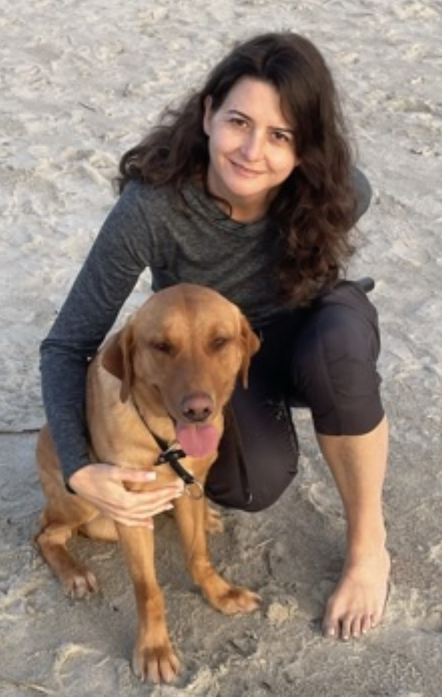

Introduction

I usually try to see my live positive
- Personal Background: I am 47 years old. I was born in Caracas, the capital of Venezuela and my parents are from Spain.
I moved to Charlotte six years ago to improve my English and to start a new future in this lovely country.
- Professional Background: I am a bilingual professional archivist with more than 20 years of experience in document science: managing and analyzing archive processes;
creating and executing archive digitalization projects in financial and legal companies.
I began my experience in the USA open my box and working as a personal assistant with my knowledge background, lab assistance for IT, and Spanish interpreter.
- Academic Background: I have a bachelor and specialization that I finished in 2005 in document science.
Six years ago I started studying again.I completed EFL courses and I took programs Web technologies and Associate in Arts.
Background in the subject matter of this course: I am new in the IT world, but among all of the program courses I enjoy WEB classes the most.
- Primary Computer Platform: HP, Windows 10
- Reason for taking each course:
- Something to remember me by: I always have to be doing something, and my friends always call me to know what cultural events are happening or
where is a good place to go in Charlotte. I have a philosophy: Life is so short, you have to work but enjoy life and the moments!
- I'd also like to share: This class is a real challenge for me. I consider myself a regular technology person,
but I hope to improve and learn many things in this class.